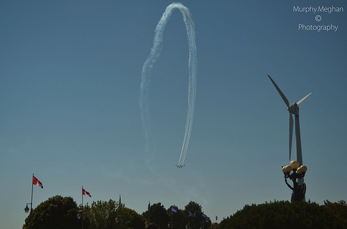

With 2.8 million people, Toronto, Ontario is the fourth-largest city in North America and the 69th most populous city in the world. Although very cold for much of the year, it is praised as one of the most fun places to visit in the warmer months. Here are some things to do this upcoming summer.
The CN Tower was the tallest tower in the world until 2010 and is a magnificent symbol of Canada's beauty and strength. It stands at 1,815 ft / 553m, offering a great view of Toronto, including Lake Ontario, the city's streets, and surrounding skyscrapers. There are great deals on tickets after dark in the summer and the view is as stunning as ever. Step outside onto the EdgeWalk for a breath of fresh air or walk over the Glass Floor and see the ground below your feet. Then head down to the souvenir shop to purchase something to remember your trip to the top of the world.
Taking place over Lake Ontario during Canada's Labor Day Weekend, this national show features a number of airplanes executing spectacular and heart-stopping dives and flips in the air during the entire weekend. While you can enjoy the air show on its own, you can also have a day at the Canadian National Exhibit grounds (the CNE). Apart from having one of the best views of the air show, the fair, called the Ex, has multiple rides, games where prizes can be won, and brilliant displays of elaborate sand sculptures. There is food, great music, vendors giving out free merchandise, a parade, and more. The Ex begins two weeks before Labor Day and ends on the last day of Labor Day so be sure to enjoy it and the air show while the summer is still hot.
Canada's largest theme park is located 45 minutes north of Toronto. The amusement park has the largest variety of roller coasters in North America, with 16 fun coasters for visitors to enjoy. The celebratory fireworks for Victoria Day and Canada Day are part of the most spectacular show that most have ever seen. Children, teens and adults will have a great time no matter the time of the year because there is something for everyone to enjoy.
An amusement park that is closer to the city's center is Centreville. It is located on an island that can be accessed only by ferry. The ten-minute ferry ride from downtown's Union Square station across Toronto's Inner Harbor is a pleasure for children and adults alike. Once on the island, choose a patch of green space to have a picnic or head straight into Centreville, the amusement park. Full of ferris wheels, rollercoasters and farm animals, it never disappoints. You can also escape to the opposite end of the island and take a hike along the trail that runs next to the water.